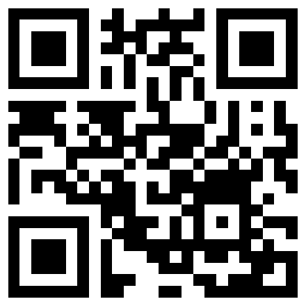

Sticker fixe
Toujours le même QR
2.1 · Principes & typologies
Définition
QR = Quick Response (« réponse rapide ») — code-barres 2D inventé pour être lu vite, même abîmé ou sous angle. Il encode une chaîne de données : texte libre, URL, contact, identifiant technique, ticket, configuration… — pas uniquement un paiement.
Le payload est la charge utile portée par le QR : les octets / caractères que le lecteur récupère après scan. Le QR n’est que le support optique ; le payload, c’est le contenu — n’importe quelle chaîne comprise par l’app qui lit.
Cas courants hors paiement : URL · Wi‑Fi

https://exemple.com/menu
https://
Schéma
Protocole : le lecteur ouvre un navigateur / une app.
exemple.com
Hôte
Serveur cible — menu, fiche produit, page d’info…
/menu
Chemin
Ressource demandée après le scan.
WIFI:T:WPA;S:CafeDemo;P:demo1234;;
WIFI:
Type
Convention téléphone : configurer un réseau Wi‑Fi.
T:WPA
Sécurité
Type de chiffrement (WPA / WEP / nopass…).
S:CafeDemo
SSID
Nom du réseau à rejoindre.
P:demo1234
Mot de passe
Clé — exemple pédagogique uniquement.
Même algo de génération pour une URL, un Wi‑Fi ou un paiement : seule la chaîne change.
Support optique
Le payload est le contenu. L’algo de génération (norme ISO/IEC 18004) le transforme en matrice de modules noir / blanc — en pratique une librairie, pas un moteur maison.
De la chaîne de caractères à l’image scannée
Terrain : payload trop long ou ECC trop haut → QR dense → scans ratés à distance. Le compromis est produit / UX, pas « plus de crypto ».
Cas d’usage
Un QR de paiement est un cas d’usage : le même support optique, mais un payload compris par une app (bancaire, wallet, marchand) pour initier ou recevoir une opération. Ce n’est pas « un seul objet » : plusieurs axes changent le SI et le risque.
Format pédagogique (pipe) · équivalent simplifié d’un QR statique
PAY|MID:TRAIN|AMT:|CUR:XOF|REF:STAT|POI:11
PAY
Objet
Indique un QR de paiement (pas un lien web générique).
MID:TRAIN
Marchand
Identifiant commerçant / compte à créditer.
AMT:
Montant
Vide → le payeur saisit après scan (typique du statique).
CUR:XOF
Devise
Code monétaire (ici franc CFA).
REF:STAT
Référence
Libellé / référence métier côté acceptation.
POI:11
Mode d’initiation
11 = statique (convention type EMV) ;
12 = dynamique.
En production, le même rôle est souvent porté par un payload TLV (ex. EMV QR) : mêmes idées (IDs, montant, devise, CRC…), autre syntaxe.
Quatre axes à maîtriser — chaque couple change ce payload et le SI autour.
Modes monétiques
Statique : contenu fixe (souvent ID
marchand). Dynamique : payload généré pour
une opération (montant, référence, TTL). En EMV QR : tag 01
= 11 / 12.
Statique : le QR dit qui créditer ; le combien (et souvent la réf.) vient après le scan, côté payeur ou app. Dynamique : le QR dit qui + combien + réf. (+ TTL) ; généré pour cette opération, puis jeté / expiré.
Qui porte le montant — EMV tag 01 · 11 / 12
Sortez le téléphone — scannez les deux. À gauche le payload ne change jamais ; à droite il expire et se régénère.
Toujours le même QR
Expire dans 8 s
| Statique (11) | Dynamique (12) | |
|---|---|---|
| Payload | Fixe (MID…) | Unique par ticket |
| Montant | Saisi après scan | Déjà dans le QR |
| Risque typique | Montant erroné / QR photocopié | Replay si pas de TTL / unicité |
| SI | Simple (sticker) | QR engine + TTL + anti-rejeu |
Modes monétiques
Qui présente le QR ? En EMV : Merchant-Presented (MPM) ≈ pull · Consumer-Presented (CPM) ≈ push.
Sens du scan — MPM / CPM
Même geste « scanner », rôles inversés. À gauche vous êtes le payeur (vous scannez le marchand). À droite vous êtes la caisse (vous scannez le téléphone du client). Les deux QR sont fixes ici : statique / dynamique est un autre axe (un pull peut être dynamique — caisse qui affiche le montant).
Payeur scanne — tire l’identité du bénéficiaire
Caisse scanne — reçoit l’intention du payeur
| Pull (MPM) | Push (CPM) | |
|---|---|---|
| Qui présente | Marchand / bénéficiaire | Payeur (écran téléphone) |
| Qui scanne | Payeur | Caisse / agent |
| Payload typique | Identité du bénéficiaire (± montant) | Identité / intention du payeur |
| Risque typique | Surtout si fixe : QR marchand falsifié / collé | Surtout si fixe : QR payeur capturé / rejoué |
| SI | QR côté acceptation | App payeur + lecteur caisse |
Modes monétiques
Qui peut payer avec ce QR ?
Périmètre d’acceptation
| Closed-loop | Open-loop | |
|---|---|---|
| Périmètre | Un écosystème propriétaire | Plusieurs banques / wallets / schemes |
| Exemples | Carte cadeau enseigne, wallet mono-rail | QR national, EMV QR interop |
| Payload / SI | IDs et règles internes | Specs communes + routage / switch |
| Avantage | Simple à déployer, contrôle total | Portée large, un QR multi-apps |
| Limite | Isolé — pas d’acceptation hors réseau | Gouvernance, interop, conformité |
Modes monétiques
Quelle app initie le paiement ?
Même logique d’auth — canal UX différent
| Bancaire | Wallet | |
|---|---|---|
| Canal UX | App / parcours banque | App wallet (souvent multi-moyens) |
| Vue J2 | Rails banque / PSP visibles | Façade UX — technique reportée J4 |
| Socle J1 | Auth → Clearing → Settlement inchangé | |
| Confusion à éviter | « Wallet » ici ≠ token / SE / NFC (J3–J4) | |
Ne pas confondre « wallet UX » (J2) et architecture wallet / token / SE (J3–J4).